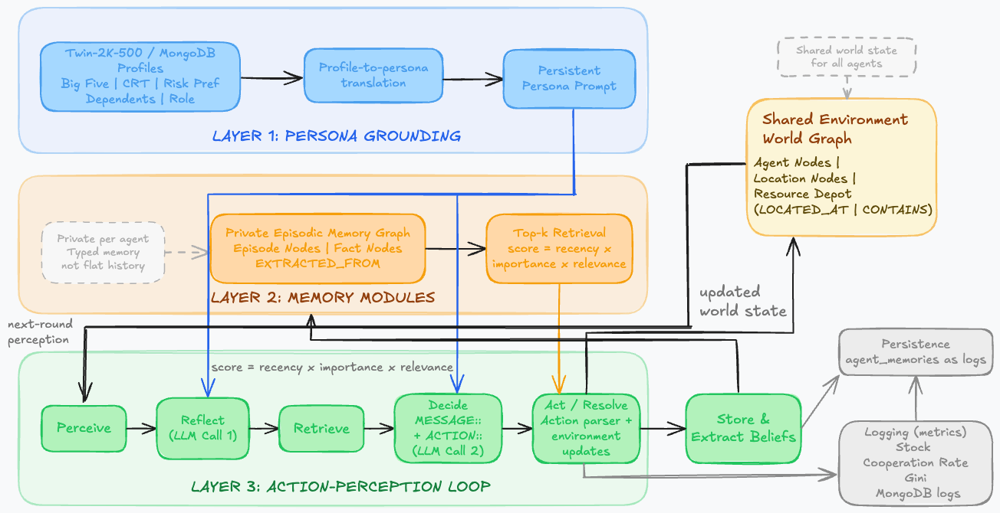
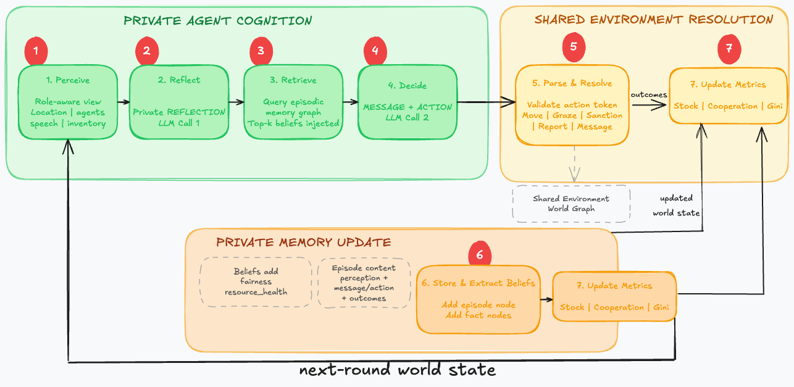
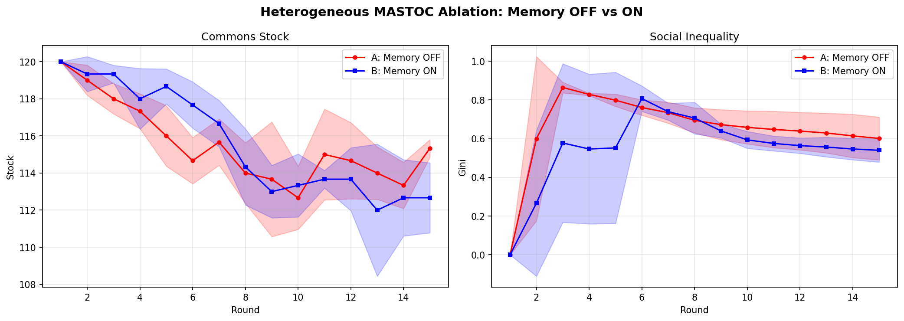
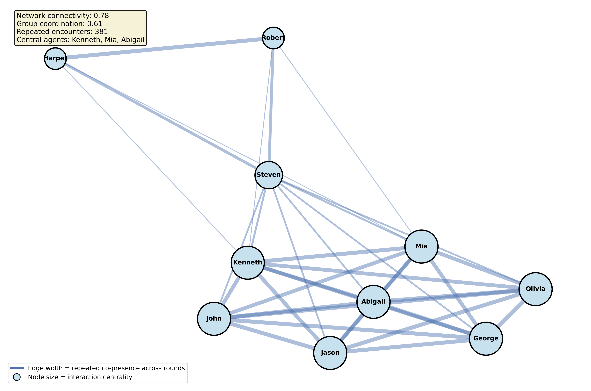
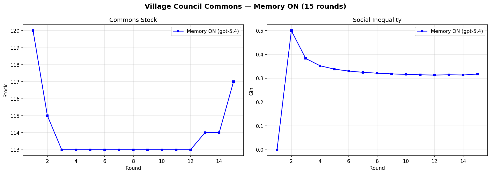
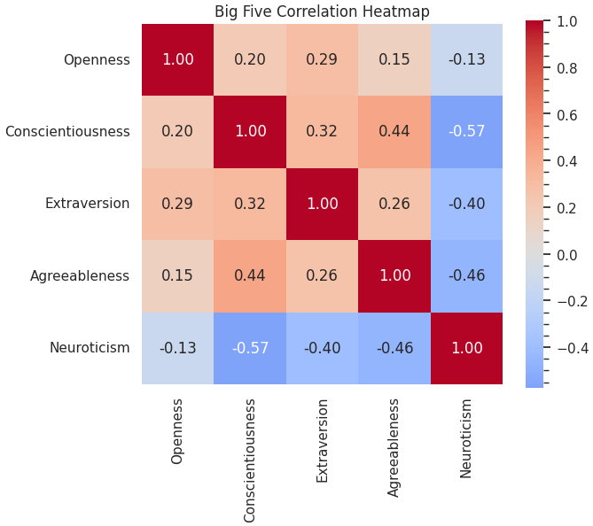

The Future of Simulation Modeling: Developing a Memory-Driven Architecture with LLMs
Demo
Simulation
Overview
Abstract
This project models a shared pasture where herders, regulators, and a scout operate under different pressures. Some agents extract early, some monitor, and some try to stabilize the group through public signals. The core question is simple: can a commons remain fair and sustainable when agents remember past behavior instead of treating each round as socially blank?
System View
Architecture

Interaction Dynamics
Simulation Loop

Evaluation
Results



